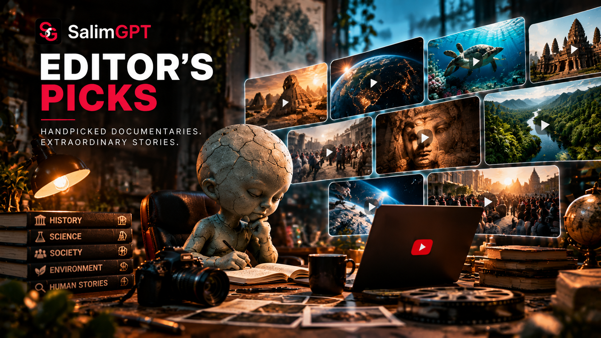
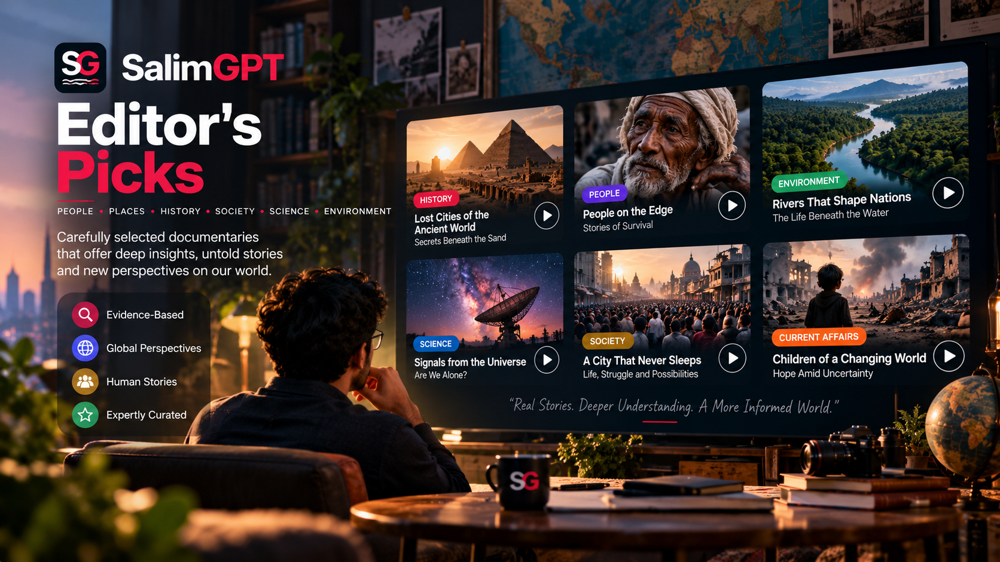

BN
Available
SALIMGPT BENGALI
বাংলা
বাংলা সংস্করণে ডকুমেন্টারি অন্বেষণ করুন।
বাংলা সংস্করণ দেখুন
DISCOVER
A documentary discovery gateway shaped by human editorial judgment, research relevance, storytelling value and the opportunity to help audiences explore meaningful subjects.
Editor’s Picks are editorial discovery selections, not popularity rankings and not automated recommendations. Specific documentary selections should appear only when they have been reviewed and intentionally chosen for publication.

AVAILABLE EDITIONS
Continue to an official SalimGPT language edition to explore documentary selections published for that audience and editorial context.
SALIMGPT BENGALI
বাংলা সংস্করণে ডকুমেন্টারি অন্বেষণ করুন।
SALIMGPT ENGLISH
Explore documentary content in the English edition.
SALIMGPT HINDI
हिन्दी संस्करण में डॉक्यूमेंट्री देखें।
HUMAN EDITORIAL SELECTION
SalimGPT uses AI as an assistant in parts of research, drafting, visual development, language work and production, but editorial selection remains a human-led responsibility.
A documentary may be highlighted because its subject, evidence, perspective, storytelling or wider context makes it useful for discovery. Inclusion does not mean that every selected documentary is more important than every documentary outside the selection.

EDITORIAL CONTEXT
Editorial selections can reflect multiple considerations rather than a single numerical score or automated ranking.
A subject may be selected when its evidence, historical context, scientific importance or social relevance offers a valuable path for further exploration.
Selection may consider how effectively a documentary develops its subject, connects evidence and context, and presents the material as a coherent documentary experience.
Picks can help audiences discover subjects, questions or documentary pathways they may not otherwise encounter through popularity-based browsing alone.
Final inclusion is based on human editorial review. AI-assisted production tools do not independently decide which documentary becomes an Editor’s Pick.
IMPORTANT DISTINCTION
Editor’s Picks and Most Viewed serve different discovery purposes. Most Viewed relates to available audience activity, while Editor’s Picks reflects intentional editorial selection. Neither should be treated as a universal measure of documentary quality or importance.
SALIMGPT EDITORIAL MODEL
AI may assist parts of the documentary production workflow, but research assessment, source verification, fact-checking, editorial judgment, creative direction, review and final approval remain human-led.